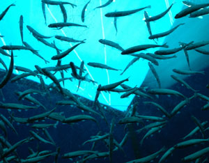

ISTOCKPHOTO/YEN-HUNG WANG
Three fourths of oceanic fisheries are now being fished at or beyond capacity, or are recovering from overexploitation. If we continue with business as usual, many of these fisheries will collapse.